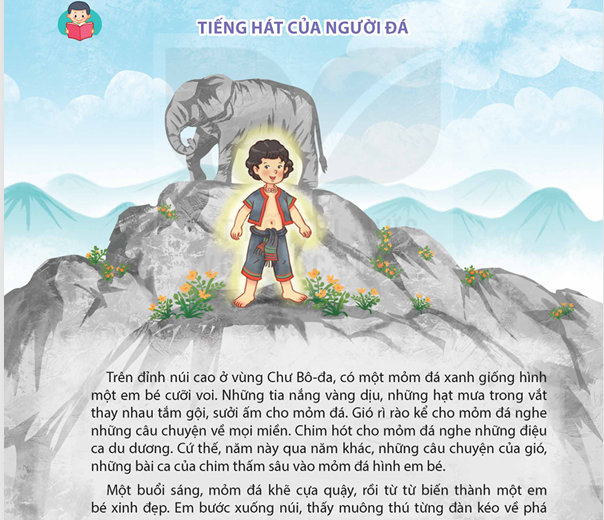
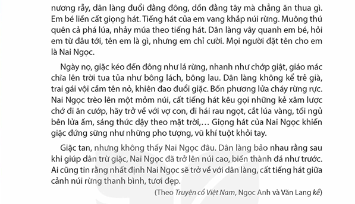

Nghe đọc mẫu
Đang dừng...


Thông điệp
Nội dung chính
Câu chuyện đề cao sức mạnh của cái đẹp và lòng nhân ái.
Những hành động của Nai Ngọc thể hiện tình yêu tha thiết đối với cuộc sống và con người. Qua những hình ảnh so sánh, nhân hóa sinh động, truyện ca ngợi vẻ đẹp của thiên nhiên và tâm hồn dũng cảm, yêu hòa bình của con người, góp phần làm cho thế giới thêm tươi đẹp hơn.